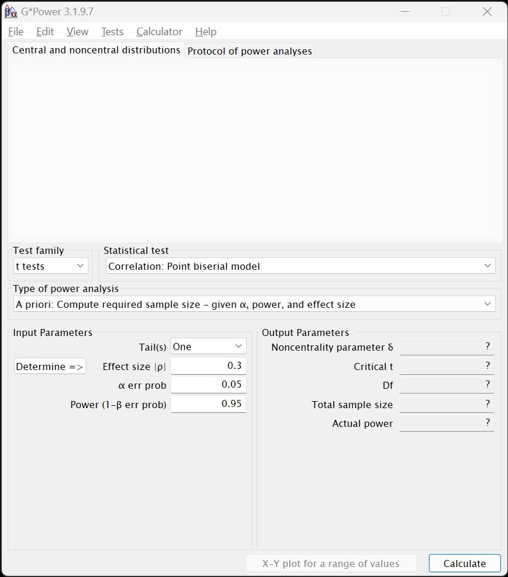
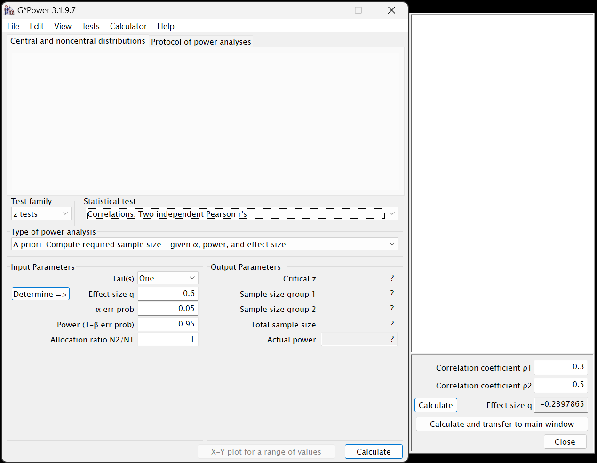
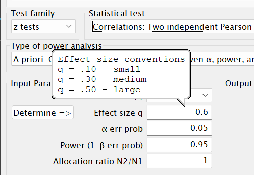
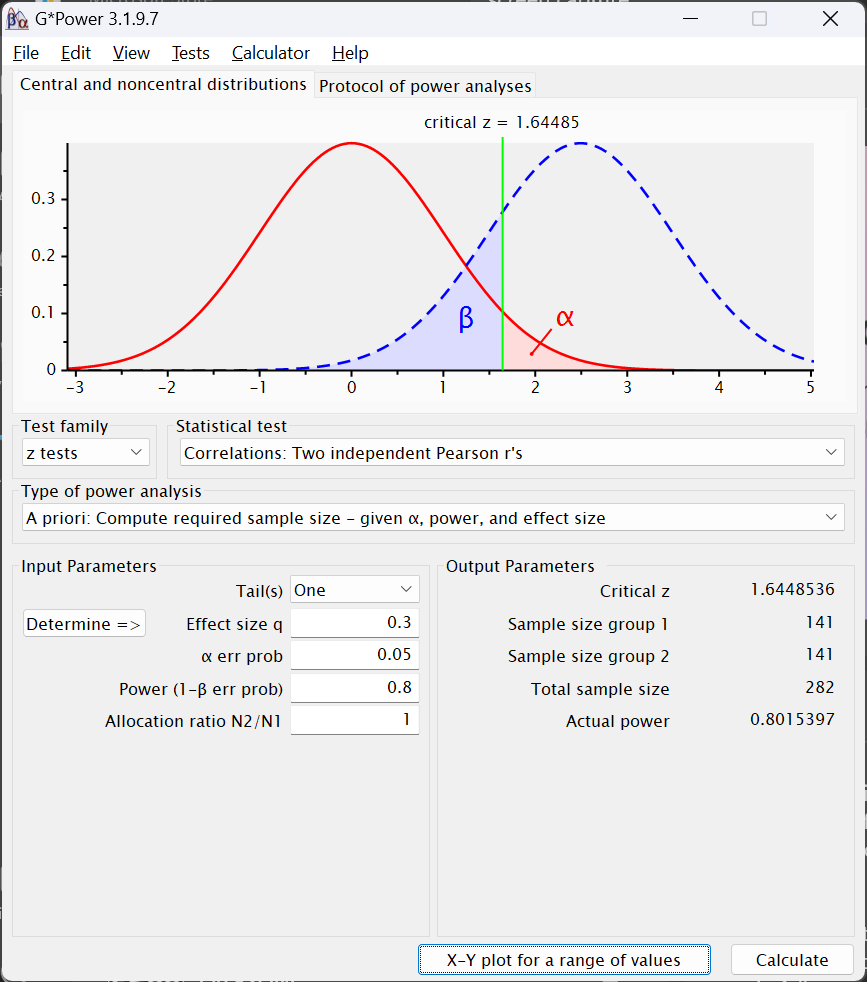
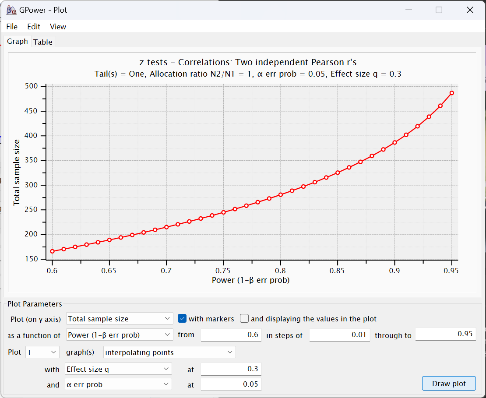
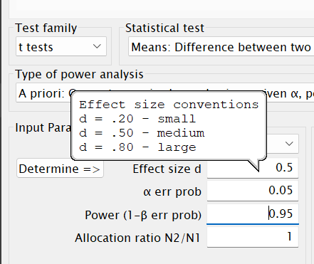
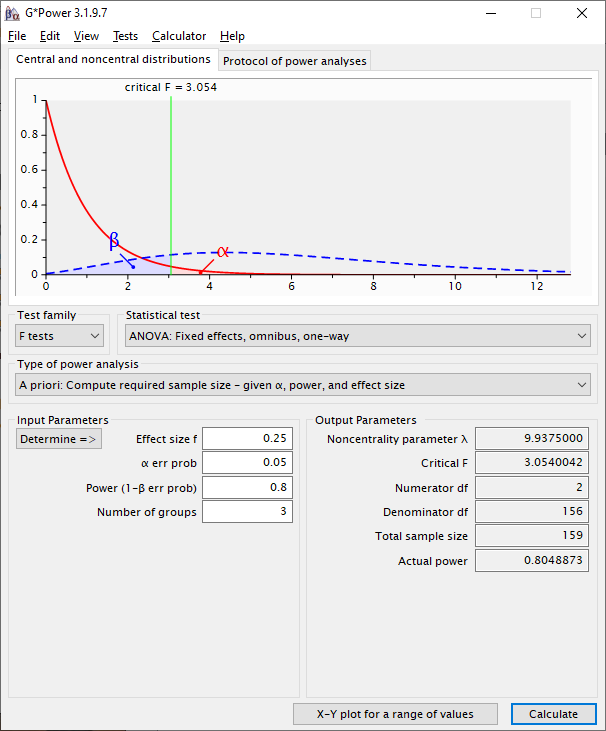
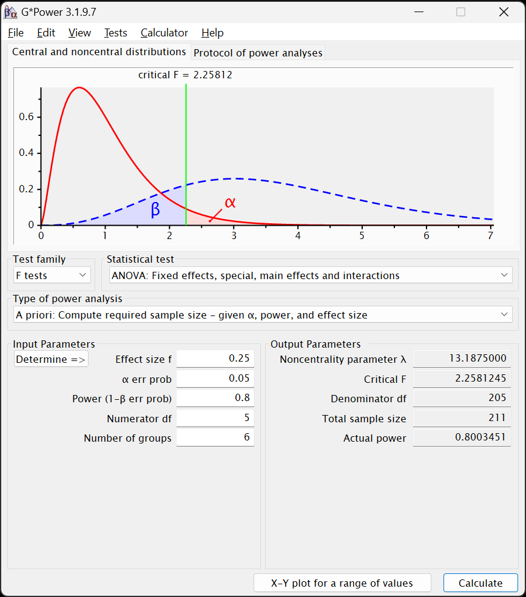
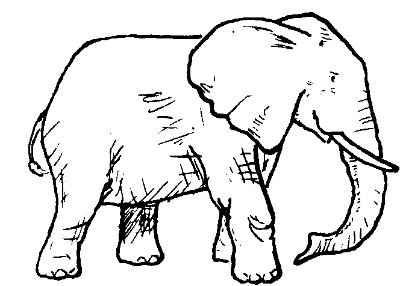

library(pwr)
# Define the correlations
r1 <- 0.5 # The correlation we expect in one group
r2 <- 0.3 # The correlation we expect in the other group
# Compute Cohen's q
q <- abs(0.5 * log((1 + r1)/(1 - r1)) - 0.5 * log((1 + r2)/(1 - r2)))
q
# Estimate required sample size per group to detect difference in correlations
pwr.norm.test(d = q, sig.level = 0.05, power = 0.8,
alternative = "two.sided")16 Introduction to Power and Sample Size Estimation Using Either G*Power or R
16.1 The Relationship Between α, Power, Effect Size, and Sample Size
Power is one of four, inter-related values used (implicitly or explicitly) in hypothesis testing:
- α, the probability of a false positive—seeing an effect that isn’t there. (Also called a Type 1 error.)
- β, the probability of a false negative—missing a real effect. (Also called a Type 2 error.)
- Note that power is 1 – β
- Effect size, the magnitude of a measured effect. More about this is at Chapter 6
- N, the sample size.
Changes in any of these four values affects the chances of obtaining a significant effect:

Sample size doesn’t appear directly in this figure, but it affects the width of the distributions—when those distributions represent uncertainty around an estimate (such as estimates of a population mean1). We are using the sample values to estimate these population values, so these distributions represent the probabilities of what the population values are given the sample values we found. The vertical red and blue lines denote the sample values we got for each group, and the curves represent the probabilities of where the actual population values are expected to be. The larger our sample, the more confident we are that our sample’s values are darned close to the population values—and so the distributions become thinner.
As the samples grow—and the distribution of estimates of the population means become thinner—the chances of false positives (α) and false negatives (β) become smaller:

Generally, if we know any three of those values—α, β, effect size, or N—we can compute the fourth2. This most often means that we can estimate the sample size (N) that we would need to detect a given effect size, while assuming particular values for α and β.
16.2 Using G*Power or R to Estimate a Priori Sample Size Estimates
G*Power (and R) are perhaps the best, current, one-stop applications3 to estimate sample sizes needed to expect significance of many, common analyses.
G*Power is a free (as in “free beer””) software follows the “Unix” philosophy to do one thing and do it well. What it does well is estimate how large a sample one will need to be for various analyses. As the name implies, it’s in fact designed to conduct analyses related to statistical power, but it most often used to computes sample sizes well (power is only occasionally worth computing anyway).
16.2.1 Installing G*Power
Finally, software that’s easy to install:
16.2.2 Citing G*Power
The creators of G*Power request that one uses one or both of the following citations when using it:
Faul, F., Erdfelder, E., Lang, A.-G., & Buchner, A. (2007). G*Power 3: A flexible statistical power analysis program for the social, behavioral, and biomedical sciences. Behavior Research Methods, 39, 175–191.
Faul, F., Erdfelder, E., Buchner, A., & Lang, A.-G. (2009). Statistical power analyses using G*Power 3.1: Tests for correlation and regression analyses. Behavior Research Methods, 41, 1149–1160.
16.2.3 Orientation to G*Power
G*Power has a rather simple interface. Below the menu bar at the top (and a window that will fill with power cures for your estimation), it presents a drop-down menu for Test family and Statistical test; most of the options below these drop-down menus will change depending on the options chosen there.

Usually, the first step to use G*Power is to select Test family and then the Statistical test. After that, one fills in the values in the fields below in the Input Parameters section.
Type of power analysis
The drop-down menu under immediately under Test family and Statistical test allows one to compute either sample size or power, α, or effect size. The only option we will use is A priori: Compute required smaple size - given α, power, and effect size. However, it’s worth briefly discussing the other options.
The Type of power analysis offers more options than the A priori: Compute required sample size - given α, power, and effect size. Most of the options pertain to computing the other variables in the α, power, effect size, sample size group. There is one worth explaining, however: Compromise : Compute implied α & power - given β/α ratio, sample size, and effect size
A priori: Compute required sample size and a Note on Post hoc Power Analyses
Computing effect size can be informative. Computing required α may be interesting if rarely practical. Computing post hoc “achieved power,” however, is rarely either [hoenig2001]. Post hoc power analyses depend very heavily on the particulars of a given set of data; i.e., they do not generalize—neither to other samples nor even to the actual power of the test (Yuan & Maxwell, 2005; Zhang et al., 2019).
Post hoc power analyses are also based on a tenuous interpretation of power: Achieved power is computed assuming that there is an effect, but hypothesis tests actually assume that there is no effect. Remember that hypothesis tests actually test the probability of finding the results we did if the null hypothesis is true. If we conclude that there is a significant effect, we are saying that there is insufficient evidence to conclude that the null is true. We are thus also stating that there is insufficient evidence that a post hoc power analysis is justified.
Compromise: Compute implied α & power
The Compromise: Compute implied α & power - given β/α ratio, sample size, and effect size option is an interesting one—even if it’s rarely useful. We begin with a sample size—typically the largest sample we know we would be able to attain within practical constraints—and an effect size that we either know or expect to have. Within those real constraints we can explore what levels of α and β we could achieve. We could see—for example—how badly power would be affected if we try to maintain a significance level of .05, or what level of significance we would have if we tried to keep the chances of both types of error the same.
It is an idea that harkens back to the original intents of those (like Fisher) who originally thought up the idea of a significance test. The significance level wasn’t always frozen at .05; the original idea was to use whatever level one felt was appropriate—be it .05, .01, .10, .25 or any level that conveyed how important one felt false positives were in a particular situation.
But messing with α has become verboten. A wall doing its best to keep out p-hackers and other all-too-human threats to the integrity of science. There is now little practical point to play with the proportion of false positives. It may satisfy an idle curiosity to see how strongly it is affected versus false negatives, but it isn’t going to get you any closer to published or funded. Let’s instead explore what does.
A Note About the Default Level of β in G*Power
It is common in the health and social sciences to also assume power is .80, i.e., that we have an 80% of detecting a real effect. Otherwise said, we assume we have a 20% to miss detecting a real effect. The convention is to prefer to miss seeing something important over mistakenly thinking we found something; we accept more false negatives (β = .20) than false positives (α = .05). This convention is not rigid, however, and we certainly can and should change those values—such as making α and β the same—if justified.
However, the default value for β in G*Power is .05, thus setting the chance of a false negative (β) the same as the chance of a false postitive (α). G*Power is used in many areas of science, and that .80 convention for power isn’t followed everywhere. For example, pharmaceutical researchers often use that higher value for power (1 – β = .9) so they have a better chance to detect real—even rare—side effects in clinical trials.
16.2.4 Estimating Required Sample Sizes
For all of these exercises, we will be estimating how large a sample we would expect to need in various analyses and assuming common standards for α and β. Before we do, however, I want to point out that the key words in that sentence are “estimating” and “expect”: Sample size estimation is not an exact science and the actual study we conduct will surely have actual rates of significance different from what we expect. After all, if we already knew what we would find, we probably wouldn’t be conducting the experiment.
It is also worth pointing out that we pretty often actually need a larger sample than we estimate. There is a tendency to be overly optimistic about our abilities to realize certain effects or overcome real-world challenges for recruiting a conscientious group of well-delimited participants. Nonetheless, our a priori estimates can at least put us in the general vicinity of where we need to be.
Correlations
Let us begin with estimating samples for correlations. Although it’s not evident from most stat programs, we use different sorts of tests for different sorts of correlations. Therefore, tests of correlations are under different Test family options in G*Power.
Pearson’s Product-Moment Correlation (r)
We begin with the most commonly-used type of correlation, that which is most formally called Pearson’s product-moment correlation coefficient. This is the one symbolized with a simple r that measures the degree of association between two continuous variables. This sample size estimate is for tests of whether the correlations differ between two groups.
For example, if Hepatitis B/C is more strongly correlated with incidents of liver cancer in males than in non-males. Or whether the correlation between income and longevity is different among Blacks versus that correlation among whites. Let’s use that latter example and assume that we expect that the correlation will be .5 among Blacks but only .3 among whites (or vice versa). We’re thus interested in seeing how large a sample we would need to reliably detect a significant difference between these correlation coefficients.
- It is found under the
z testsoption in theTest familymenu. - After selecting that option, under
Statistical test, chooseCorrelations: Two independent Pearons's r's5:

- As we will for all of these exercises, under
Type of power analysis, chooseA priori: Compute required sample size - given α, power, and effect size - In the
Input Parameterssection, let’s first chooseOneunderTails. (We will next see how things change when we choose two.) - Handling effect size
- By computing the difference between two anticipated correlations.
- The effect size statistic for a difference between correlations is Cohen’s q (Cohen, 1988, p. 109), as noted in the next row,
Effect size q. Most effect size statistics are easy to compute, but unfortunately q is not6. Fortunately, G*Power can easily compute it for us: - Click on the
Determine =>button to the left ofEffect size q. A new window will open to the right of the main window:
 - By sheer coincidence, the default values given by G*Power for the first (
Correlation coefficient ρ1) and second (Correlation coefficient ρ2) correlations are the ones we want7, so leave them as they are. - Still inside the side window, click on the
Calculate and transfer to main windowbutton. The computed value for q will be populated into both the side window’s and the main window’sEffect size qfields. - Click
Closein that side window.
Note that most power analyses in G*Power will have aDetermine =>button, but they will do different things for different tests. Often, it is used to convert one effect size measure to an other one that is more appropriate for the given test (unlike we did here).
- The effect size statistic for a difference between correlations is Cohen’s q (Cohen, 1988, p. 109), as noted in the next row,
- By using Cohen’s (1988) recommendations.
- Back in the
Input Parameterssection of the main window, mouse over the field where we will enter our values:

The bubble that appears lists the values that Cohen (1988) recommends for—in this case—Pearson’s rs. A bit more about his recommendations for these is given on page 129 of his book. Looking at those suggested levels, we see that the effect size for a difference between r1 = .3 and r2 = .5 is a bit less than a “medium”-sized effect. - Although Cohen’s recommendations are viewed by most as more canonical than Cohen intended, it is still useful practice to use them as guides for anticipating effects, especially if we don’t know ahead of time what size of effects we can expect. Or here, if we didn’t have any reason to expect certain correlations for each group beforehand.
In such cases, researchers often assume a priori that they will achieve a “medium” effect. (Although I tend to recommend assuming something half way between a “small” and “medium.”) G*Power also uses a “medium” effect as well for the default value, so feel free to use that here instead of the \(\approx\)|0.23| that we computed from a priori expected correlations.
It is quite worth noting, however, that it is greatly preferable to instead use prior research—even if only tangentially related—to estimate what levels of effects one should expect.
- Back in the
- For
Effect size q, please enter either ~0.23 or .3. I will continue assuming that you entered in the latter option.
- By computing the difference between two anticipated correlations.
- The
α-error proboption can be left at the0.05default both now and probably always. - The default value in G*Power for
Power (1 - β err prob)is0.95. Since 1 – .05 = .95, that is implying that the probability of a false negative (β) should be equal to the probability of a false positive (α). I commend the creators of G*Power8 for advocating for this parity. However, convention is to deprecate power relative to α and set 1 – β to .8 (thus setting β = .2, four times larger than α).- tl;dr: Enter
.8into thePower (1 - β err prob)field
- tl;dr: Enter
- The
Allocation ratio N2/N1is asking if the size of the two groups (i.e., the groups whose different correlations we’re testing, e.g., if Blacks versus whites have a different correlation between income and longevity) is the same.- If we assume that there will be equal numbers in both groups, then enter
1. - If we assume, e.g., that we will have twice as many whites as Blacks, then enter
2(or.5to change which group is consider which race). - Of course, any other ratio can be used, and different ratios tried to obtain tolerance ranges.
- If we assume that there will be equal numbers in both groups, then enter
- Click on the
Calculatebutton in the lower right.
Assuming you used these values—including 1 for Allocation ratio N2/N1—your output should look like this:

- Under the
Output Parameterssection, we can see that theCritical zvalue is \(\approx\) 1.64. This is also presented in the figure near the top of the G*Power window. This is simply the value of the test statistic (here z) computed and used to test the significance of the difference between correlation coefficients. - Of greater interest are the next three rows.
Sample size group 1andSample size group 2present the required samples sizes for the two groups. Note that these would be different if we had chosen a value other than1for theAllocation ratio N2/N1.Total sample sizeis just the sum of those two samples sizes. We would thus need a total N of 282 to detect a difference between the two correlations (or 438 if you used -.23 for the effect size).
- The
Actual powerfield simply presents what the power is for these two sample sizes. It differs slightly from what we entered into thePower (1 - β err prob)field due to rounding error from the sample sizes needing to be whole numbers.
If we change the tab at the top from Central and noncentral distribution to Protocol of power analysis, instead of the two curves at the top, we see both the values we entered to estimate the sample size and the output. This alone is of little use, but of slightly more use is that, under this tab, we can select File > Save Protocol and save these input and output values as a text file. (Under the Central and noncentral distribution tab, we can instead save that image of the two distributions.)
Click now on the X-Y plot for a range of values button next to the Calculate button. The following new window will appear:

This figure presents what the power would expected to be were we to use different total sample sizes. You will see that the y-axis (Total sample size) is about at 280 (or 440 if you used q = -.23) when the x-axis is at 0.8. Had we used G*Power’s default of .95 for power, the estimated total sample size would have been a little less than 500.
The fields below this figure present the values we entered in the other window as well as options for changing the figure, including changing the range of power values presented and the “steps” between each dot in the figure. The Table tab at the top lets us look at these values as a table instead of a figure for more precision:
I think this X-Y plot for a range of values window is under appreciated. We can change values in this figure (and the corresponding table) to see not only the estimated sample size needed, but how smallish changes to the values—especially to power—would change with different assumptions.
Please return to G*Power’s main window and change the Tails to Two and recalculate the sample size estimation. Under the Protocol of power analysis tab, you can save that output as, e.g., corr_2-tailed.rtf.
More about this particular analysis is on page 65 of the G*Power Manual.
Point Biserial Correlation (rpb)
Point biserial correlations measure the association between a dichotomous variable and a continuous variable (e.g., the association between pregnancy and blood pressure). In significance tests of point biserial correlations, we’re seeing how closely matched some continuous outcome score is for two group. Two nominal groups and a continuous outcome, that sounds like a t-test.
- Under
Test family, chooset tests. - Under
Statistical testchooseCorrelation: Point biserial model - As always, under
Type of power analysis, chooseA priori: Compute required sample size - given α, power, and effect size - Since we usually use two-tailed significance tests, please change
TailstoTwo. (We will next see how things change when we choose two.) - The effect size statistic has changed to
Effect size |p|since a different measure is used to compute it for rpb (and t-tests in general). Mousing over that field, though, shows that the same values pertain for “small,” “medium,” and “large” effects. (This isn’t always the case.) Again, please enter.3for a “medium” effect. - The only other options here are for
α-error probandPower (1 - β err prob)for which we will use.05and.8, respectively. - Click on the
Calculatebutton in the lower right. The following should appear:

The Ouput Parameters area contains somewhat different values. Instead of z, the test statistic is the Noncentrality parameter δ along with Critical t, which is tested—in this particular case—against a Df of 62. That is two df less than the Total sample size estimated to be needed to find an effect under these conditions.
t-Tests
Along with a few other tests (like for rpb), all t-tests are under Test family > t tests. Two of the most common t-tests are:
Means: Differences between two dependent means (matched groups)- This is used when the values used to compute the two means we’re testing come from the same participants, e.g., when we have pretest and posttest measures for the same patients.
Means: Differences between two independent means (two groups)- This is used whenever the means come from different participants. This is more often the case—and would apply even if we had pretest and posttest measures but from different patients (e.g., if we measured HCAHPS satisfaction scores from an outpatient unit before and after an intervention).
- Let us use the latter of those two,
Means: Differences between two independent means (two groups) - The options for
Input Parametersis similar to what we were presented with for Pearson correlations (in Section 16.2.4.1.1). However, when we mouse over theEffect size dfield, we see different recommendations for sizes:
- Cohen’s d, the measure of effect size now used, is computed differently than his q used to measure the effect size of difference between correlation coefficients. As I describe in Chapter 6, this is simply the standardized difference between the two means; it’s also one of the most commonly-used measures of effect size.
- Let’s stick with the default given, a “medium” effect of
0.5.
α err probcan of course stay at0.05- But please change
Power (1-β prob)to.8 - We could again stipulate a different ratio for the number of participants in the two groups, but let’s again assume we will have equal numbers and enter
1inAllocation ratio N2/N1
Like with rpb, in the Output Parameters section, we have Noncentrality parameter δ, Critical t, and Df. However, we now have two groups, so we instead have Sample size group 1, Sample size group 1, and Total sample size. That last field reports expecting to need 102 total participants, so the Df for the Critical t is 100.
F-Tests
F-tests are primarily (nearly only) used to test effects in ANOVAs and their ilk (ANCOVAs, MANOVAs, etc.). These include the most complex sample size analyses available within G*Power, and the most complex ones researchers typically try to do9 The reason for this is because the variance associated with effects differ depending on a couple of parameters, such as the number of variables and whether those variables are “fixed” or “random” effects10.
ANOVA: Fixed effects, omnibus, one-way
A one-way ANOVA is simplest form of ANOVA: It contains only one input variable11 (and one output variable). This one-way ANOVA is really just a t-test that is used when the input variable has more than two levels to it. We would use a t-test to test the difference (in some continuous outcome) between two groups, say between those diagnosed or not diagnosed with a certain cancer. If there are more than two groups—if, e.g., we were instead looking at the stage of the cancer—we would use a one-way ANOVA.
Sample size estimates for one-way ANOVAs thus closely resemble those for t-tests. The difference is that, for one-way ANOVAs, we must indicate how many levels the input variable has. To conduct sample size estimates for them:
- Under
Test family, chooseF tests - Under
Statistical test, chooseANOVA: Fixed effects, omnibus, one-way - Under
Type of power anlaysischooseA priori: Compute required sample size - given α, power, and effect size - In the
Input Parameterssection, when you mouse over theEffect size ffield, you will once again see that the values Cohen (1988) suggests for “small” through “large” effects are different than for z or t tests:

As noted in Chapter 6, Cohen’s f denotes a the effect of a variable after partialing out the effects of other variables. In a one-way ANOVA, there are no other effects—no other variables—but the criteria for effect sizes is still based on this other standard.- Let’s again leave this value at the default—a “medium” effect of
0.25
- Let’s again leave this value at the default—a “medium” effect of
- We can also again leave
α-error probto be0.05but changePower (1 - β err prob)to be.8. - The
Number of groupsfield is slightly misleading. This is in fact asking for the number of levels of the input variable. So, e.g., if we are studying the effects of cancer stage and using the TNM staging system, we would have three groups—one for each of the three stages.- Going with that, please enter
3in theNumber of groupsfield.
- Going with that, please enter
- Clicking
Calculategenerates the following output:

The output is thus:
Noncentrality parameter λ- In this context, the noncentrality parameter is used to measure the power of the F-test. Larger numbers denote higher possibilities of larger power, depending on other parameters (viz., α, β, & N). Although good to report, this isn’t critical to consider since it’s used to help compute the other values in the
Output Parameterssection. - There nonetheless may be a use of further explained the noncentrality parameter statistic: You will see that what is now called the Central and noncentral distributions` in the figure do not look normally distributed. This is because F-tests use F distributions to test significance—not normal distributions. This is very similar to what is done with χ2 tests, and F distributions strongly resemble χ2 distributions—including in becoming closer to a normal distribution as the degrees of freedom increase. However, part of the F-test uses the numerator degrees of freedom, which is usually quite small—here, it’s 2. So, as the figure shows, F tests are used under conditions in which the distributions actually used to compute significance themselves aren’t appreciably normally distributed: They are “non-central” since the “center” of the distribution is unclear—as it is in the red (null) distribution in the figure.
- In this context, the noncentrality parameter is used to measure the power of the F-test. Larger numbers denote higher possibilities of larger power, depending on other parameters (viz., α, β, & N). Although good to report, this isn’t critical to consider since it’s used to help compute the other values in the
Critical F- This is the level of the F-statistic needed to establish significance under these conditions
Numerator df- This number will be one less than the
Number of groups
- This number will be one less than the
Denominator df- This is the number that would be needed in the lower part of the F-test in order to find significance under these conditions—the error degrees of freedom. This in turn translates into most of the sample size we expect to need.
Total sample size- This is the
Numerator dfplus theDenominator dfplus one more degree of freedom needed to estimate the intercept.
- This is the
Actual power- Given the rounding needed to create a whole number for the numerator and denominate degrees of freedom, actual actual power will often be a little different from what we entered in the
Power (1 - β err prob)field in theInput Parameterssection.
- Given the rounding needed to create a whole number for the numerator and denominate degrees of freedom, actual actual power will often be a little different from what we entered in the
More about power analyses with one-way ANOVAs is presented by UCLA’s Statistical Methods and Data Analytics site.
ANOVA: Fixed effects, special, main effects and interactions
(For those who prefer videos—and soothing piano music—this video also presents conducting sample size estimates for multi-way ANOVAs.)
As we increase the complexity of our analyses, we next move on to ANOVA: Fixed effects, special, main effects and interactions. Here, we can estimate sample sizes for ANOVAs with one or more nominal variables.
The main issue with sample size estimates for ANOVA-family analyses is correctly assigning numerator degrees of freedom. And the main issue with doing that when all of the input variables are nominal is to understand how degrees of freedom are computed for them:
- The degrees of freedom for any nominal main effect is one less than the number of levels of that variable12
- Using TNM cancer staging as an example, the number of degrees of freedom for its main effect would be 3 – 1 = 2.
- The degrees of freedom for an interaction between two nominal input variables is the product of their main effect degrees of freedom.
- Let us assume that we wanted to look at the interaction between dichotomized gender (self-identifying as female or male) and TNM cancer stage.
- The degrees of freedom for gender’s main effect would be 2 – 1 = 1.
- The degrees of freedom for the TNM cancer stage main effect would, of course, be 2.
- The degrees of freedom for the gender \(\times\) cancer stage interaction would be 2 \(\times\) 1 = 2.
- Let us assume that we wanted to look at the interaction between dichotomized gender (self-identifying as female or male) and TNM cancer stage.
Continuing with that example, if we were interested in knowing the significance of both main effects and their interaction, then the total number of numerator degree of freedom I need to consider in my sample size estimate is:
\(\text{Total}\text{ Numerator } df\text{s} = df_{\text{Cancer} \text{ Stage}} + df_{\text{Dichotomized}\text{ Gender}} + df_{\text{Cancer} \text{ Stage} \times \text{Gender}\text{ Interaction}}\)
\(\text{Total}\text{ Numerator } df\text{s} = 2 + 1 + 2\)
\(\text{Total}\text{ Numerator } df\text{s} = 5\)
It is thus 5 that we would enter into the Numerator df field.
With this understanding in hand, let us compute the estimate sample size for this model:
- Mousing over
Effect size f, we see that a “medium” effect for Cohen’s f is .25, again the default given by G*Power, and again what we will retain since we have no prior studies to guide us better. α err probwe will leave as0.05.Power (1 - β err prob)we will change to.8.Numberator dfis5(those two main effects and their interaction).Number of groupsis the product of the total number of levels of the input variables.- Here, TNM stage has 3 levels and dichotomized gender has 2, so the
Number of groupsis 3 \(\times\) 2 = 613.
- Here, TNM stage has 3 levels and dichotomized gender has 2, so the
- Clicking
Calculatereturns this output:

Indicating that we expect to need 211 participants to find significant effects for both main effects and their interaction. Of course, we couldn’t divide this number evenly between the groups, so there would be a small amount of imbalance between them.
Note that we don’t need to worry about the significance of every term we enter into a model. As I discuss in Chapter 4, we can enter terms in a model solely to isolate (“partial out”) their effects on those other terms whose effects we are interested in. Of course, do this cautiously so to not delude yourself into thinking you need fewer participants than you actually will. Sure, data are expensive, but investing to get some but not enough data—and then having to redo a study—is more expensive than getting enough the first time.
Among the most, well, powerful packages in R is pwr, which can easily compute same size estimates, etc, with a few succinct lines of code. We’ll also use the pwr2 package. WebPower is also very useful for power analyses.
16.2.5 Comparing Two Independent Correlations
We examine how large a sample is needed to detect a difference between two Pearson correlations:
16.2.6 Independent Samples t-Test
Sample size needed to detect a medium effect (d = 0.5):
pwr.t.test(d = 0.5, # Coden's d, effect size for a mean difference
power = 0.8, # desired power
sig.level = 0.05, # significance level
type = "two.sample" # Type of t-test being evaluated
)16.2.7 Paired Samples t-Test
Sample size needed when using paired/matched data:
pwr.t.test(d = 0.5, # Coden's d, effect size for a mean difference
power = 0.8, # desired power
sig.level = 0.05, # significance level
type = "paired" # Type of t-test being evaluated
)16.2.8 Point-Biserial Correlation
This is the correlation between a continuous variable and a dichotomous variable (coded as 0 or 1).
pwr.r.test(r = 0.3, # Pearson (or phi) correlation
power = 0.8, # desired power
sig.level = 0.05 # significance level
)16.2.9 One-Way ANOVA
pwr.anova.test(k = 3, # The number of levels of the IV (e.g., 2 for Experimental vs. Control group)
f = 0.25, # Cohen's f, the effect size for terms in an ANOVA
power = 0.8, # desired power
sig.level = 0.05) # significance level16.2.10 Two-Way ANOVA
Two IVs with 3 and 2 levels respectively (6 groups total):
pwr2::pwr.2way(a = 3, # levels in factor A
b = 2, # levels in factor B
alpha = 0.05, # significance level
power = 0.8, # desired power
f = 0.25, # effect size (Cohen's f)
n = NULL) # compute required sample size per cell16.2.11 Power Curves
Power Curve for Independent-Samples t-Test
# Plot the power curve for a range of sample sizes in a two-sample t-test
curve(
expr = pwr::pwr.t.test(
n = x, # sample size per group
d = 0.5, # Cohen's d effect size (medium effect)
sig.level = 0.05, # significance level (alpha)
type = "two.sample" # specifies independent-samples t-test
)$power, # extract power from the result
from = 10, to = 200, # range of sample sizes (per group)
xlab = "Sample Size per Group", # x-axis label
ylab = "Power", # y-axis label
main = "Power Curve for d = 0.5" # title of the plot (match d above)
)
# Add a reference line for the conventional 80% power threshold
abline(h = 0.8, col = "red", lty = 2)Power Curve for One-Way ANOVA
## Power Curve for One-Way ANOVA (e.g., 3 groups)
# Plot power vs. total sample size for one-way ANOVA
curve(
expr = pwr::pwr.anova.test(
k = 3, # number of groups
n = x / k, # converts total sample size to per-group n
f = 0.25, # Cohen's f effect size (medium)
sig.level = 0.05 # significance level (alpha)
)$power,
from = 30, to = 300, # total sample size range
xlab = "Total Sample Size", # x-axis label
ylab = "Power", # y-axis label
main = "Power Curve for One-Way ANOVA (k = 3, f = 0.25)" # title
)
# Add conventional power threshold line
abline(h = 0.8, col = "red", lty = 2)Power Curve for Two-Way ANOVA (Main Effects + Interaction)
pwr.f2.test() is used for general linear models including two-way ANOVA. To use this, you need:
u: numerator degrees of freedom (e.g., 1 for each main effect, plus interaction)v: denominator degrees of freedom (sample size – predictors – 1)f2: Cohen’s \(f^2\) effect size. \(f^2 = \frac{f^2_{\text{anova}}}{1 - f^2_{\text{anova}}}\), so for \(f = 0.25\), \(f^2 ≈ 0.0625\)
## Power Curve for Two-Way ANOVA (2x3 design, 2 main effects + interaction)
# Total df = (levels_A - 1) + (levels_B - 1) + (A*B interaction df)
numerator_df <- (2 - 1) + (3 - 1) + ((2 - 1) * (3 - 1)) # = 1 + 2 + 2 = 5
f2_value <- 0.25^2 / (1 - 0.25^2) # convert Cohen's f to f^2 ≈ 0.0625 / 0.9375 ≈ 0.0667
# Power curve for GLM (e.g., 2x3 ANOVA with 5 df for predictors)
curve(
expr = pwr::pwr.f2.test(
u = numerator_df, # numerator df (main + interaction)
v = x - numerator_df - 1, # denominator df = N - u - 1
f2 = f2_value, # Cohen's f^2 effect size
sig.level = 0.05 # significance level (alpha)
)$power,
from = 60, to = 300, # total sample size range
xlab = "Total Sample Size", # x-axis label
ylab = "Power", # y-axis label
main = "Power Curve for Two-Way ANOVA (f = 0.25, df = 5)" # title
)
# Add reference line at power = 0.8
abline(h = 0.8, col = "red", lty = 2)16.3 Additional Resources
16.3.1 G*Power Guides & Tutorials
- G*Power Manual, which is quite useful
- The UCLA Guide to G*Power contains detailed but digestible guides to estimates for most of the analyses you’ll conduct (except maybe χ2 tests).
- Mayr, S., Erdfelder, E., Buchner, A., & Faul, F. (2007). A short tutorial of GPower. Tutorials in Quantitative Methods for Psychology, 3(2), 51–59. doi: 10.20982/tqmp.03.2.p051.
- Faul, F., Erdfelder, E., Lang, A.-G., & Buchner, A. (2007). G*Power 3: a flexible statistical power analysis program for the social, behavioral, and biomedical sciences. Behavior Research Methods, 39(2), 175–191. doi: 10.3758/BF03193146. RIS
- Kang, H. (2021). Sample size determination and power analysis using the GPower software. Journal of Educational Evaluation for Health Professions, 18, 1–17. doi: 10.3352/jeehp.2021.18.17. RIS
16.3.2 Further Readings and Explanations
- Bujang, M. A. (2021). A step-by-step process on sample size determination for medical research. The Malaysian Journal of Medical Sciences, 28(2), 15–27. doi: 10.21315/mjms2021.28.2.2
- Probably best is Table 1 which presents a nice list of other sources for more information about sample size estimations for various types of analyses from correlations to exploratory factor analysis.
- Das, S., Mitra, K., & Mandal, M. (2016) Sample size calculation: Basic principles. Indian Journal of Anaesthesia, 60(9), 652–656. doi: 10.4103/0019-5049.190621. PMID: 27729692; PMCID: PMC5037946. NBIB
- Hunt, A. (n.d.). A researcher’s guide to power analysis.
16.3.3 Sample Size Estimations and Guidelines for More Complex Designs
ANCOVAs
- Borm, G. F., Fransen, J., & Lemmens, W. A. J. . (2007). A simple sample size formula for analysis of covariance in randomized clinical trials. Journal of Clinical Epidemiology, 60(12), 1234–1238. doi: 10.1016/j.jclinepi.2007.02.006. RIS
- Shieh, G. (2020). Power Analysis and Sample Size Planning in ANCOVA Designs. Psychometrika, 85(1), 101–120. doi: 10.1007/s11336-019-09692-3. RIS
- Teerenstra, S., Eldridge, S., Graff, M., de Hoop, E., & Borm, G. F. (2012). A simple sample size formula for analysis of covariance in cluster randomized trials. Statistics in Medicine, 31(20), 2169–2178. doi: 10.1002/sim.5352. RIS
Logistic Regression
- Motrenko, A., Strijov, V., & Weber, G.-W. (2014). Sample size determination for logistic regression. Journal of Computational and Applied Mathematics, 255, 743–752. doi: 10.1016/j.cam.2013.06.031. RIS
Factor Analysis and Structural Equation Models
- Grace-Martin, K. (n.d.). How big of a sample size fo you need for factor analysis? The Analysis Factor. https://www.theanalysisfactor.com/sample-size-needed-for-factor-analysis/
- Kelley, K., Lai, K. (2018). Sample size planning for confirmatory factor models. In The Wiley Handbook of Psychometric Testing (pp. 113–138). John Wiley & Sons, Ltd. doi: https://doi.org/10.1002/9781118489772.ch5. RIS
- La Du, T. J., & Tanaka, J. S. (1989). Influence of sample size, estimation method, and model specification on goodness-of-fit assessments in structural equation models. Journal of Applied Psychology, 74(4), 625–635. doi: 10.1037/0021-9010.74.4.625. RIS
- Mundfrom, D. J., Shaw, D. G., & Ke, T. L. (2005). Minimum sample size recommendations for conducting factor analyses. International Journal of Testing, 5(2), 159–168. doi: 10.1207/s15327574ijt0502_4. RIS
- Nicolaou, A. I., & Masoner, M. M. (2013). Sample size requirements in structural equation models under standard conditions. International Journal of Accounting Information Systems, 14(4), 256–274. doi: 10.1016/j.accinf.2013.11.001. RIS Pearson, R., H. & Mundform, D. J. (2010). Recommended sample size for conducting exploratory factor analysis on dichotomous data. Journal of Modern Applied Statistical Methods, 9(2), 359–368. doi: 10.22237/jmasm/1288584240.
- Wolf, E. J., Harrington, K. M., Clark, S. L., & Miller, M. W. (2013). Sample size requirements for structural equation models: An evaluation of power, bias, and solution propriety. Educational and Psychological Measurement, 73(6), 913–934. doi: 10.1177/0013164413495237. RIS
16.3.4 Online Tools
- Kovacs, M., van Ravenzwaaij, D., Hoekstra, R., Aczel, B.. (2022). SampleSizePlanner: A tool to estimate and justify sample size for two-group studies. Advances in Methods and Practices in Psychological Science. 2022;5(1). doi: 10.1177/25152459211054059. RIS

Although we often think of figures like this showing differences in estimates of means, these could instead be estimating, e.g., population proportions (whether, e.g., the proportion of members of two populations have different mortality rates for a given disorder). Since we tend to think about this in terms of means, though, let’s just stick with that.↩︎
Some analyses are not this straight forward, though, for various reasons. Among the reasons why it isn’t always this straight forward is because the N for the sample is divided out unevenly among the effects being tested—especially for nested effects; we will address this in one of the cases you are more likely to encounter (it’s different types of ANOVAs), but first let’s orient ourselves to G*Power and conduct some more straight-forward sample size estimates.↩︎
Alas, there is no GNU/Linux version.↩︎
Even though using an apostrophe in
r'sis incorrect: It’s plural, not possessive, so should instead bers. Just one of my many grammatical pet peeves.↩︎It’s this monstrosity: \(q = {\frac{1}{2}\text{log}_e\frac{1 + r_2}{1 - r_2} -\frac{1}{2}\text{log}_e\frac{1 + r_1}{1 - r_1}}\) for correlations r1 and r2.↩︎
Changing the order of them so that
Correlation coefficient ρ1is.5andCorrelation coefficient ρ2is.3will make the effect size measure, q, into a positive value, but that doesn’t matter: The positive or negative sign simple indicates which correlation is larger than which. Making it positive will also move the H1 distribution to the right of the H0 one in the figure at the top.↩︎G*Power was created and is maintained by Edgar Erdfelder, Franz Faul, and their colleagues at Heinrich-Heine-Universität Düsseldorf.↩︎
I give resources in the Section 16.3 section about estimating sample sizes for factor analyses, etc. These are important…but much less straight forward.↩︎
“Fixed” factors are those for which all possible levels are present in the data, e.g., if data for both those who survive and die from an illness are present. “Random” factors are those for which a random subset of all possible levels of a variable are present; these are typically continuous variables (such as height). The ways that error is estimated for these differ.↩︎
You may well have learned to call this the “independent variable” (IV). This is not wrong—it’s just not always correct. An IV is the term used to indicate a variable that researchers manipulate or measure in a true experimental design to observe their effects on some outcome—that which (in that context) is called a dependent variable and that I’m calling by the more general term of “output variable.” The input variable in an ANOVA is indeed often an IV. However, there are certainly times when we wish to test the effects of a variable that isn’t an IV, for example if we’re working with secondary data in which no variables are forcibly IVs or DVs.↩︎
We deduct “1” from each main effect because we only need to establish the values for all levels but one. That last level can be deduced from the other levels. As a simplified analogy, if I knew that x + y + z = 6, then I only need to know that x = 2 and that y = 2 to know that z also equals 2.↩︎
Notice that, in this case, including the interaction term in the model doesn’t affect the estimating needed sample size.↩︎